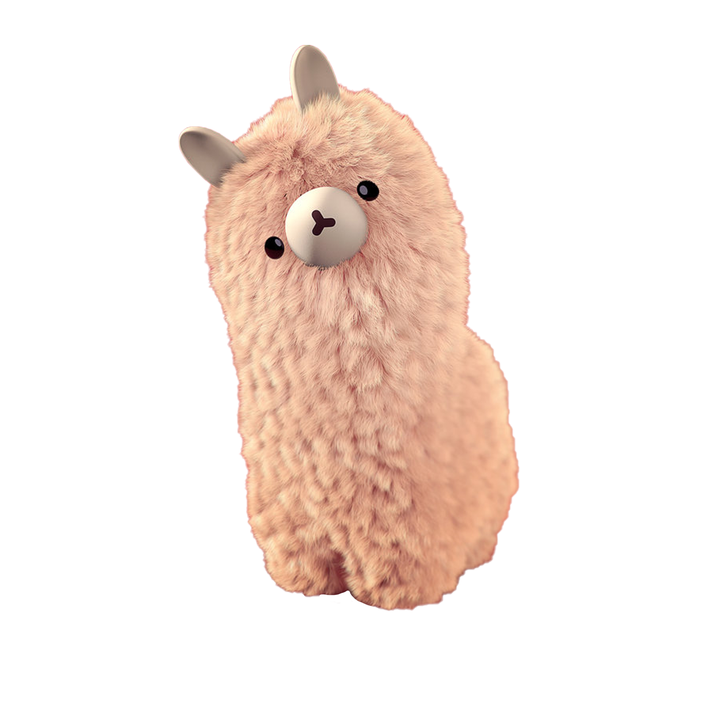
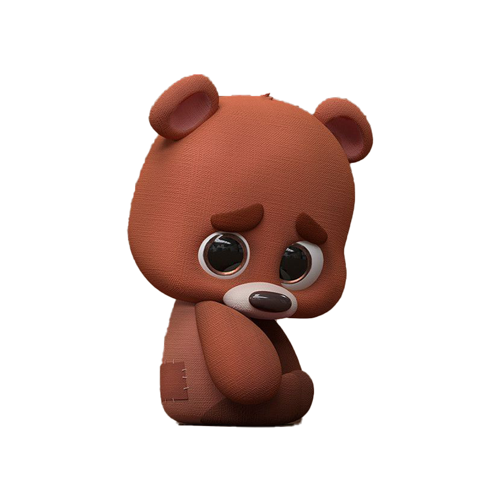

MAKEUP
The ugly secret of the beauty industry is that animals have chemicals forced down their throats, dripped into their eyes, or smeared onto their skin to test their safety for use in cosmetics.

Why are millions of animals STILL suffering in laboratories? There’s no justifiable reason.
Companies do not need to
torture animals in order to test mascara, shampoo, detergent, or other household products.
Scientists do not have to torment
monkeys in order to cure a disease.
Educators do not need to buy fetal pigs to teach students physiology.
There are easy ways to lend your voice to animals suffering in experiments,
and TOGETHER we can stop animal testing!
The ugly secret of the beauty industry is that animals have chemicals forced down their throats, dripped into their eyes, or smeared onto their skin to test their safety for use in cosmetics.
Animal testing is not appropriate for skincare testing. If these substances are not safe to begin with, then they should not be put into skincare, even after testing.


Worldwide, an estimated 500,000 animals are still suffering for cleaning products. But public information on animal testing for household cleaning products is confusing.


In an effort to measure toxic effects, rats, mice, guinea pigs, rabbits, and other animals are forced to swallow or inhale massive quantities of a test substance or have a chemical smeared in their eyes or skin.
Some of the tests for skin and eye irritation are performed by smearing the perfume on the skin and into the eyes of rabbits. Often these tests are not necessary, thanks to newer alternative testing options.

READ MORE ABOUT ANIMAL TESTING AWARENESS
AI beats animal testing at finding toxic chemicals. Machine learning could be the key to reducing the use of animals in experiments and the toxicity tests used on them.
Continue the article at The Scientist
Right now, millions of rats, rabbits, cats, dogs, and other animals are locked inside cages. They suffer from extreme frustration and long to be free.
Continue the article at PETA

More than 630,000 people signed a petition organized by the company, which does not test on animals, demanding an end to cosmetics testing on animals.
Continue the article at Global News

THAT AGAINST ANIMAL TESTING